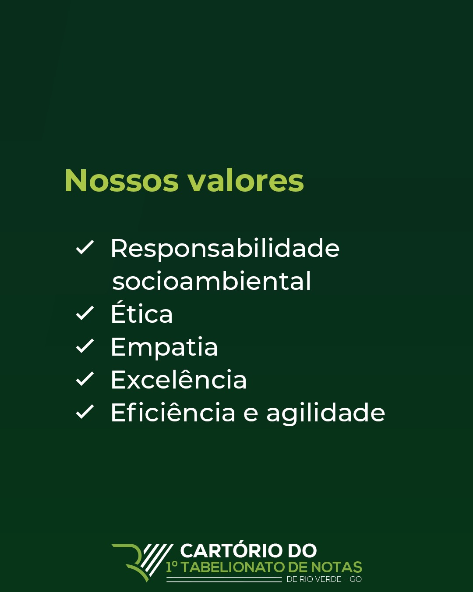
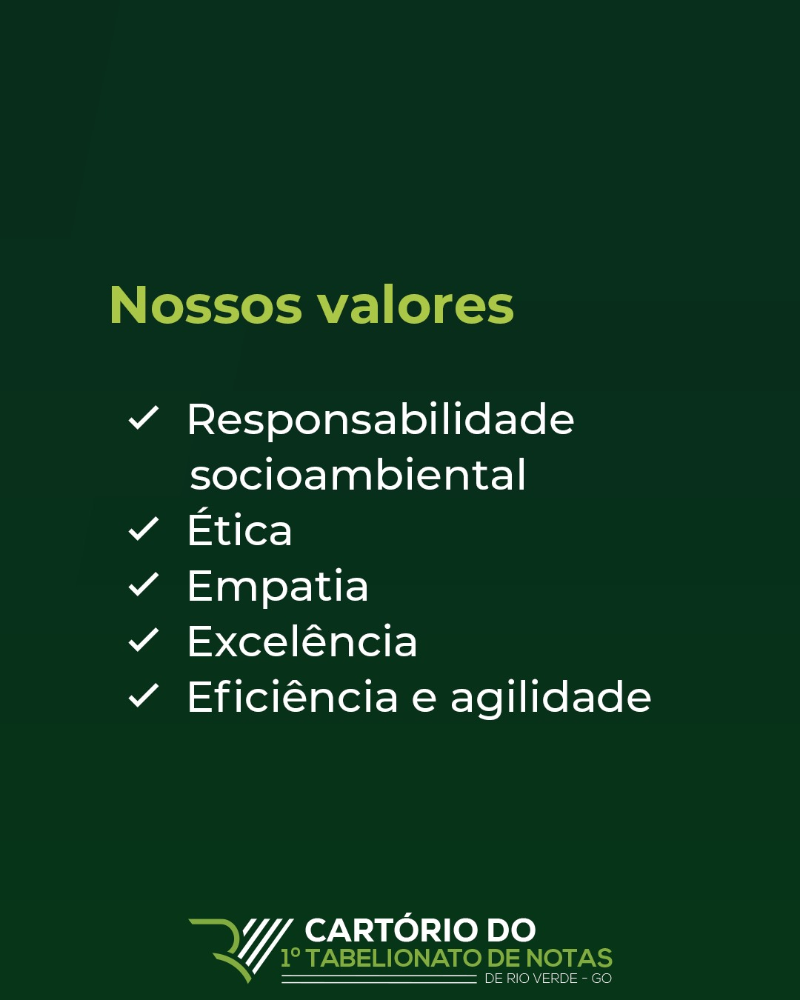

LGPD
1° TABELIONATO DE NOTAS DE RIO VERDE/GO - CARTÓRIO HERRERA
POLÍTICA DE PRIVACIDADE
Tabelião: ANDRÉ LUIZ PICOLI HERRERA
O 1° Tabelionato de Notas de Rio Verde/GO - Cartório Herrera, tem o compromisso de integral proteção da
vida
privada e intimidade das partes que nos solicitam seus atos, com isso vem alinhando sua Missão
Institucional
de realizar os serviços notariais com excelência, eficácia, transparência, proporcionando soluções
jurídicas
seguras, com o apreço pela transparência e preocupação com a privacidade dos dados dos titulares dos
quais
tem
acesso, obedecendo a Lei Geral de Proteção de Dados e as regulamentações da Função Notarial trazidas
pelas
Leis Federais nº 6.015/73 (Lei dos Registros Públicos), bem como as normatizações administrativas
editadas
pelo Conselho Nacional de Justiça (CNJ) e Corregedoria Geral da Justiça do Estado de Goiás.
A Lei n° 13.709/2018, conhecida como LGPD - Lei Geral de Proteção de Dados Pessoais, está atendida por
nós
do
1° Tabelionato de Notas de Rio Verde/GO - Cartório Herrera, sendo o objetivo dessa Política de
Privacidade
deixar você, Titular dos Dados, informado como será feita a Proteção dos seus dados, disponibilizando
informações sobre a forma que seus dados pessoais são coletados, tratados, compartilhados e armazenados
para
cumprir nossa atividade principal, sem renunciar à segurança jurídica e excelência na prestação dos
serviços
notariais. Esta Política de Privacidade faz parte do Plano de Adequação da Serventia à Lei 13.709/2018
(LGDP),
bem como a outras leis e normas setoriais relativas a LGPD.
DA FINALIDADE DOS DADOS COLETADOS:
Nos termos do artigo 1º da lei 6.015/73 (Lei dos Registros Públicos) e do 1º da lei nº 8.935/94, os
serviços
notariais e de registros são os de organização técnica e administrativa destinados a garantir a
publicidade,
autenticidade, segurança e eficácia dos atos jurídicos.
Na condição das atividades-fim dos notários, os dados pessoais deverão ser objeto de uma atividade de
tratamento pessoal para atendimento de sua finalidade pública, na persecução do interesse público, com o
objetivo de executar as competências legais ou cumprir os deveres da função notarial, advindos das leis
e
normas regulatórias aplicáveis.
Assim, a coleta dos dados realizada pelo Tabelionato é para cumprir finalidade específica para execução
dos
Serviços referente aos Registros Públicos e a Atividade Notarial, havendo dispensa de consentimento do
titular, para o cumprimento de obrigação legal, entabuladas em Legislações Federais, Estaduais e Atos
Normativos, nos termos do artigo 7º, incisos II e X da lei Federal 13.709/2018 (LGPD).
COMPARTILHAMENTO DE INFORMAÇÕES E DOS DADOS PESSOAIS:
O 1° Tabelionato de Notas de Rio Verde/GO - Cartório Herrera assegura aos seus usuários a abstenção da
prática
de compartilhamento dos dados coletados de maneira indevida e ilegal com terceiros, e, ao realizar o
compartilhamento dos dados observará os princípios da legalidade, finalidade, adequação, transparência,
tudo
em conformidade com a Legislação de Proteção e Privacidade da Dados em vigor.
DIREITO DOS TITULARES:
A Lei Geral de Proteção de Dados traz uma série de possibilidades em que o Titular do Dado poderá
exercer
seus
direitos, peticionando ao Cartório, a fim de obter informações do Tabelião. Não sendo possível o
atendimento
imediato da solicitação, será enviada resposta ao titular, que conterá: comunicar que não é agente de
tratamento dos dados e indicar, sempre que possível, o agente; ou indicar as razões de fato ou de
direito
que
impedem a adoção imediata da providência. O requerimento pode ser feito aos Encarregados de Proteção de
Dados,
a Leonardo Azevedo Cezar, pelo e-mail: lgpd1tabelionatorv@gmail.com. E será respondido na forma e no
prazo
estabelecido por lei.
ARMAZENAMENTO DOS DADOS PESSOAIS:
As informações armazenadas pelo Tabelionato, oriundas do fornecimento de dados pessoais para finalidade
notarial específica, são mantidos por tempo indeterminado, cumprindo as finalidades legais, em especial,
a
segurança jurídica e a publicidade, inerentes a atividade Notarial. As demais informações e/ou
documentos
arquivados em Cartório, obedecerão aos prazos estabelecidos pelo Provimento nº 50/2015 do CNJ. O
Tabelionato
vem adotando todos os meios possíveis com vistas a garantir segurança dos dados pessoais dos seus
titulares,
implementando Política de Governança e Gestão de Proteção e Privacidade de Dados Pessoais.
DADOS PESSOAIS COLETADOS:
O 1° Tabelionato de Notas de Rio Verde/GO - Cartório Herrera, coleta os dados para prática de atos
específicos
referente aos serviços dos Registros Públicos e Atividade Notarial, e, com vistas a garantir uma maior
Autodeterminação Informativa ao titular do dado, segue abaixo os dados coletados para cada Ato Notarial
específico. Os dados pessoais que coletamos para a prática dos atos notariais nesta Serventia são ou
poderão
ser: Dados Pessoais – Essencialmente Cadastrais: Seu nome; Documentos (CPF/RG); Estado Civil; Endereço;
Telefone (fixo/celular); E-mail; Filiação; Alcunha; estas informações são chamadas de cadastrais e são
exigidas em todos os atos praticados em nossa serventia, pois servem para identificação pessoal e
contato
acerca dos serviços realizados. Dados Sensíveis Além destes dados, é necessária à coleta de informações
mais
sensíveis, como: Dados Pessoais - Essencialmente Sensíveis: Sexo e/ou Orientação Sexual; Biometria
(Cadastro
Biométrico); Informações financeiras (extrato bancário, declaração de imposto de renda, contracheque);
Informações de cunho sigiloso; Informações sobre estado saúde e patologias; Informações étnicas; Imagens
de
Câmera de Vídeo Monitoramento; Fotografia para cadastro; existem procedimentos específicos que exigem a
coleta
de Dados Pessoais Sensíveis. Os procedimentos de coleta de dados pessoais sensíveis estão,
principalmente,
nos
relativos a escrituras públicas; exemplo: Inventários; Atas Notariais; Testamentos; Pacto Antenupcial;
Escritura de União Estável; Diretivas Antecipadas de Vontade; Divórcio e Separação; Abertura dos cartões
de
firma; Emissão de certificado digital. A coleta e o tratamento destes dados sensíveis seguirão os
princípios
da adequação, o que significa dizer que estas informações serão utilizadas estritamente para a prática
dos
atos e o cumprimento do dever legal do tabelionato.
SISTEMAS DE SEGURANÇA:
O 1° Tabelionato de Notas de Rio Verde/GO - Cartório Herrera, utiliza-se dos mais modernos sistemas de
segurança da informação disponível no mercado.
Possuímos sistema de Tecnologia da Informação (TI) interno, que utiliza protocolos de Firewalls e
criptografia
a fim de reduzir a possibilidade de invasão de nossos sistemas por hackers ou do eventual sequestro ou
uso
indevido de dados.
DOCUMENTOS FÍSICOS:
Os documentos físicos de nossa Serventia possuem rotinas próprias de acesso para garantir o não
vazamento
de
informações. O Cartório possui sistema de videomonitoramento das salas onde os documentos físicos são
armazenados.
MAIORES INFORMAÇÕES
Com o objetivo de prestar um serviço de excelência, pautado nos princípios da Segurança Jurídica,
Transparência, Legalidade, e, na formalização desta Política de Privacidade, o 1° Tabelionato de Notas
de
Rio
Verde/GO - Cartório Herrera, mantém um canal de esclarecimentos para assuntos relacionados à Lei Geral
de
Proteção de Dados, por meio do e-mail: lgpd1tabelionatorv@gmail.com.
DA REVISÃO DESSA POLÍTICA:
Esta Política poderá ser revisada e modificada, a qualquer momento, sempre que o Cartório julgar
necessário
e
conforme a necessidade de adequação com o disposto na legislação aplicável.
Encarregado: Leonardo Azevedo Cezar — lgpd1tabelionatorv@gmail.com


 
